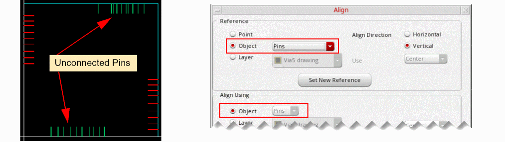
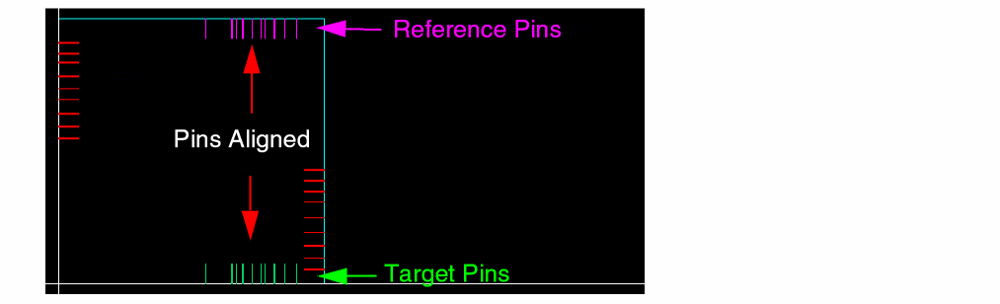

Aligning Unconnected Bus Pins
The Align command in the Align form lets you align unconnected bus pins. The selected target bus pins are aligned to the selected reference bus pins.
This feature is not available by default. To enable connectivity-independent alignment of bus pins, set the environment variable to t.
To align unconnected bus pins:
- Choose Edit – Advanced – Align. The Align form appears.
- Set Reference to Object and select Pins from the Object list.
- Set Align Using to Object.
-
Select Pins from the Object list.
 - Click Hide in the Align form.
- Select the reference bus pins on the design canvas.
- Click the middle mouse button to switch to the target selection mode.
- Select the target bus pins.
-
To mark the end of target selection, click the middle mouse button. Alternatively, return to the Align form and click Apply.

The target pins are aligned to the reference pins.
Mapping between the reference and target pins is based on their minimum and maximum bit numbers. For example, if you select the reference as net1<4:9> and target as net2<0:5>, the pin aligner derives the following mapping and aligns the pins accordingly:
net1<4> -> net2<0>
net1<5> -> net2<1>
net1<6> -> net2<2>
net1<7> -> net2<3>
net1<8> -> net2<4>
net1<9> -> net2<5>
If the number of selected reference and target bus pins do not match, the pin aligner aligns only those bus pin pairs for which both reference and target pins are selected.
Related Topics
Return to top